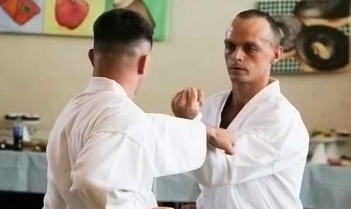
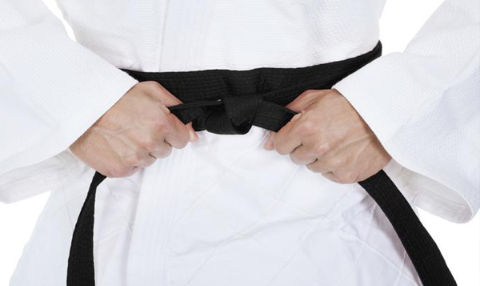
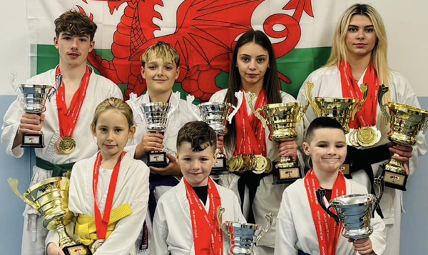

Torashin Karate Club has over 40 years experience in helping people build confidence, learn self-defense and keep fit. We pride ourselves on our training integrity, whilst still remembering to have fun along the way. We have students of all ages, from white belts to black belts. Our affordable, family friendly classes are located in a safe environment at Cefn Hengoed Leisure Centre and the Ashlands Sports Centre, Swansea.
We offer the complete package. We teach traditional Wado-ryu (the first truly Japanese style of karate) through self-discipline and respect.

Our Instructors have spent many years refining their own training and have decades of experience of teaching both adults and children. Our instructors are fully insured, first aid trained, taken the relevant child protection courses and are qualified with enhanced DBS checks.

Our diverse training sessions prepare our students for gradings that are held regularly throughout the year. We aim to build up each students confidence and skills, so they feel fully equipped and ready before grading.

All of our students have to opportunity to compete in the various tournaments throughout the UK and abroad. We have a very successful track record in all areas of competition, including the European and World Championships.
Plenty of parking is available at both venues and parents/carers have the option to stay and watch the sessions. First lesson is free!
Cefn Hengoed Leisure Centre
Cefn Hengoed Rd, Bon-y-maen, Swansea SA1 7JF
Beginners: 6:30 – 7:30pm
Higher Grades: 7:30 – 8:30pm
Ashlands Sports Centre
Wern Fawr Rd, Port Tennant, Swansea SA1 8LQ
Beginners: 6:30 – 7:30pm
Adults: 7:30 – 8:30pm
Cefn Hengoed Leisure Centre
Cefn Hengoed Rd, Bon-y-maen, Swansea SA1 7JF
Beginners: 6:30 – 7:30pm
Higher Grades: 7:30 – 8:30pm
Students can train in casual gym wear to start (loose fitting shorts and t-shirt). Footwear is not required. Once they have settled into the class, we encourage the students to purchase a gi and their first belt. These can be purchased via the club.
In general, our classes for beginners will involve an introduction to karate fundamentals (basic striking, blocking and kicking techniques). These will be practised at moderate speeds until the student's co-ordination develops.
Each one hour session costs £5. There are no monthly fees required. Students can pay per session.
We usually have 2 Gradings per year. All students will have the opportunity to be graded when they have progressed to the required level.
Students can train once a week if they wish. However, students who train full-time will advance quicker and will be able to grade more frequently.
Our current minimum age to start karate is 6 years old.
Students do not need a licence during their first training sessions. When they are ready to commit to karate, a licence can be purchased for £20 per year. The license allows students to be able to take part in gradings and competitions, and is used to track karate achievements. The license also provides insurance against any injuries that may occur.
If you would like to book a free lesson or have any queries, please contact Paul on 07377 986660 or email us via info@torashinswansea.co.uk.